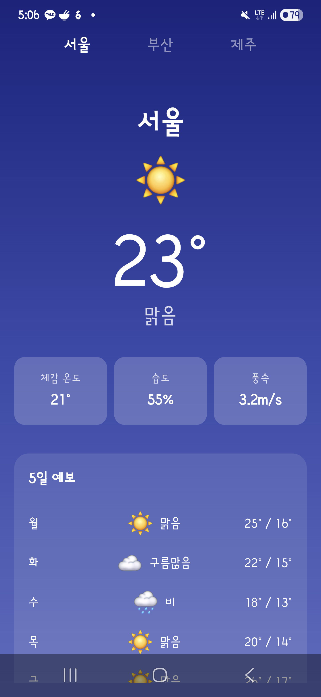

V1 · 초기 생성
초기 설계 성향 비교
동일한 앱 생성 프롬프트에서 각 AI가 어떤 기본 구조와 UI를 만드는지 비교했습니다.
초기 앱 구조와 UI 방향 차이가 핵심
상세 보고서 보기
Claude, Codex, Gemini CLI와 Cursor Agent가 만든 Android 앱을 v1 초기 생성, v2 기능 개선, v3 자율 혁신 단계로 비교했습니다. v1에는 Cursor 결과가 포함됩니다. 이 페이지는 팀 공유용 요약이며, 세부 근거는 각 단계 보고서에 남겼습니다.
v2까지는 세 AI 모두 요구 기능을 대체로 충족했습니다. 하지만 “스스로 신선한 기능을 추가하라”는 v3에서는 Gemini가 인사이트 카드와 온도 기반 배경 변화를 화면에 명확히 드러냈고, Claude와 Codex는 정적 스크린샷 기준으로 v2와 차이가 약했습니다.
| 단계 | 비교 관점 | 가장 빠른 실행 | 최저 토큰 | 핵심 해석 |
|---|---|---|---|---|
| V1 | 초기 설계 성향 비교 | Gemini · 318초 | Codex · 165,761 | 초기 앱 구조와 UI 방향 차이가 핵심 |
| V2 | 요구사항 이행력 비교 | Gemini · 149.4초 | Gemini · 642,641 | 세 앱 모두 요구 기능 충족, 구조와 화면 완성도에서 차이 |
| V3 | 체감 가능한 개선 비교 | Gemini · 185.2초 | Codex · 543,450 | Gemini의 변화가 가장 명확하게 보임 |
이 페이지는 results/index.html 기준으로 생성되었습니다. GitHub Pages를 저장소 루트에서 배포하면 이미지 경로가 그대로 동작합니다.
생성 시각: 2026-05-29T17:58:08